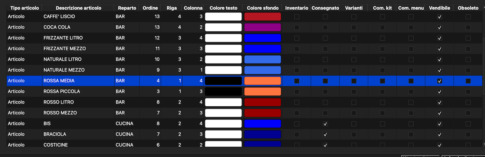
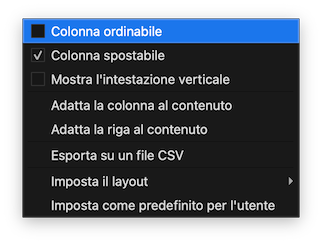
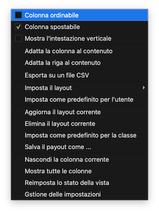
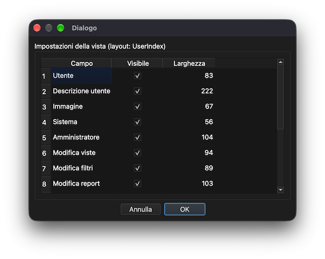

Vista a griglia
Le schede di visualizzazione a griglia dei dati presentano alcune caratteristiche comuni. Visibilità, dimensione, posizione ed altre proprietà
delle colonne sono associate a un layout

Tramite il menu contestuale, tipicamente associato al click destro del mouse, si ha accesso alla gestione della griglia. Il menu standard presenta queste voci:

Azioni associate alle voci del menu:
- Colonna ordinabile: Permette di attivare l'ordinamento su una colonna cliccando sulla sua intestazione
- Colonna spostabile: Permette di attivare lo spostamento delle colonne tramite il trascinamento della loro intestazione
- Mostra l'intestazione verticale: Permette di attivare la visualizzazione dell'intestazione verticale che riporta il numero di riga
- Adatta la colonna al contenuto: Ridimensiona la larghezza di tutte le colonne al rispettivo contenuto
- Adatta la riga al contenuto: Ridimensiona l'altezza di tutte le righe al rispettivo contenuto
- Esporta su un file CSV: Esporta il contenuto della griglia, solo elementi visibili, su un file in formato CSV
- Imposta il layout: Cambia il formato del layout della griglia scecgliendone uno di quelli disponibili nel sotto menu
- Imposta come predefinito per l'utente: Il layout corrente viene impostato come predefinito per l'utente ed applicato automaticamente all'accesso
Per gli utenti che possono modificare le viste la configurazione del menu è la seguente:

Azioni aggiuntive associate alle voci del menu per gli utenti che possono modificare le viste:
- Aggiorna il layout corrente: le eventuali modifiche impostate vengono memorizzate nel layout corrente
- Elimina il layout corrente: cancella dalla lista dei layout quello correntemente selezionato
- Imposta come predefinito per la classe: imposta il layout corrente come predefinito per la classe, se non c'è un layout predefinito per l'utente il predefinito per la classe viene selezionato ed attivato automaticamente all'accesso dell'archivio
- Salva il layout come ...: attribuisce un nome di layout e memorizza le impostazioni correnti
- Nascondi la colonna corrente: nasconde la colonna selezionata
- Mostra tutte le colonne: visualizza tutte le colonne indipendentemente da quanto previsto dal layout corrente. Se serve tornare alla configurazione precedente riapplicare un layout
- Reimposta lo stato della vista: visualizza la griglia 'originale' come non fosse applicato nessun layout
- Gestione delle impostazioni: apre la finestra di gestione della configurazione del layout
La voce Gestione delle impostazioni apre un ulteriore finestra:

Questa finestra consente di:
- modificare la posizione della colonna trascinando il campo corrispondente in alto/basso
- determinare la visibilità di una colonna spuntando su Visibile
- specificare la larghezza di una colonna in punti/pixel
Inizio pagina